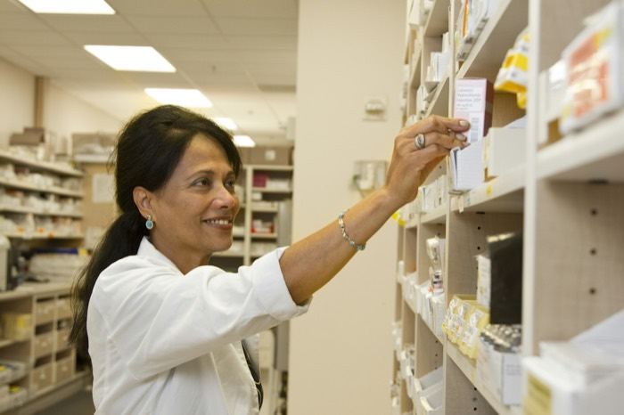
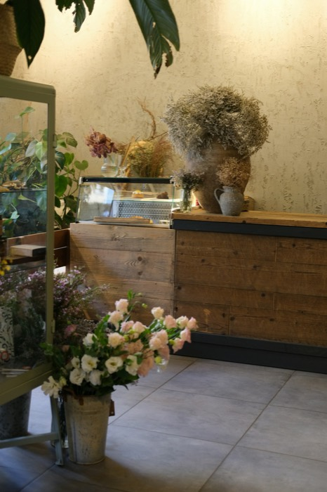
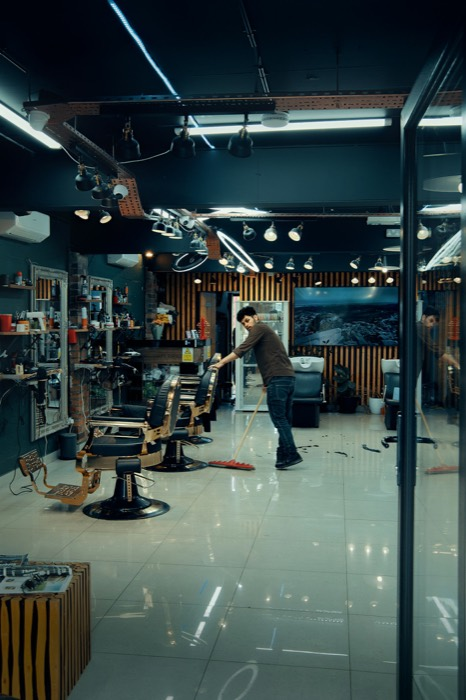
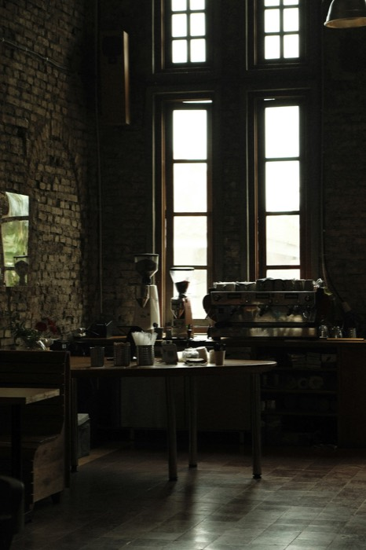

Proyectos
Casos contados como decisiones
Cada caso cuenta el problema, lo que decidimos y por qué. No publicamos cifras de ventas de nuestros clientes.
-

Botica · 48 m²Botica · 48 m² · Surquillo
Botica de barrio
La cola de caja tapaba la góndola de cuidado personal y el cliente no la recorría.
Diseño + obra · 9 semanas, de nocheVer el caso →: Botica de barrio -

Tienda · 32 m²Tienda · 32 m² · Barranco
Florería en Barranco
Se vendía desde la vereda, pero adentro no cabían ni el taller ni la exhibición.
Diseño + obra · 5 semanasVer el caso →: Florería en Barranco -

Salón · 60 m²Salón · 60 m² · San Borja
Barbería con espera a la vista
La espera estaba escondida y los clientes se iban al ver el local «lleno».
Proyecto de diseño · 4 semanasVer el caso →: Barbería con espera a la vista -

Cafetería · 40 m²Cafetería · 40 m² · Lince
Cafetería de paso
Pedidos y recojo en el mismo punto: la barra se colapsaba a las 8 a. m.
Diseño + obra · 11 semanasVer el caso →: Cafetería de paso
¿Tienes un local en mente?
Cuéntanos cómo es en 4 pasos. Toma unos 3 minutos y al final ves un rango orientativo.
Cotizar mi local